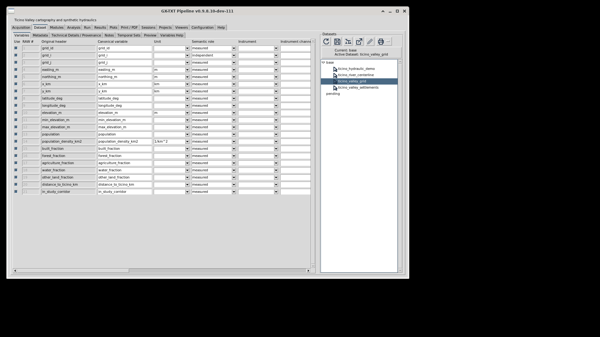
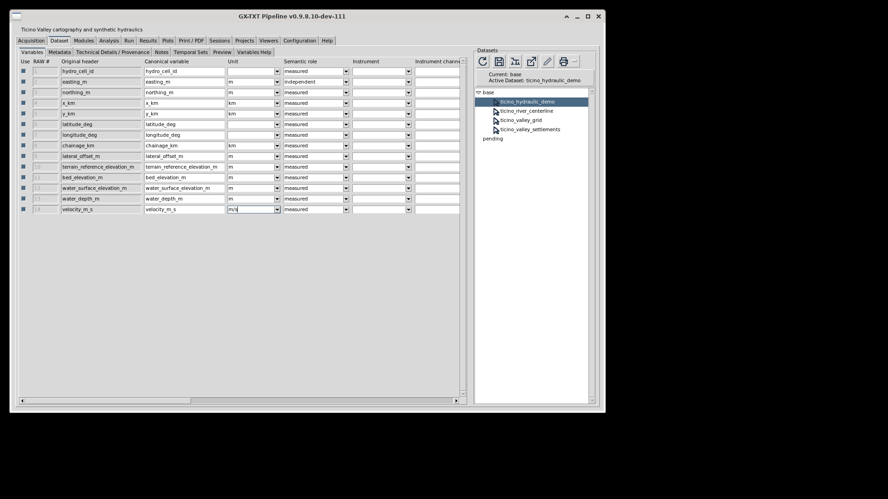
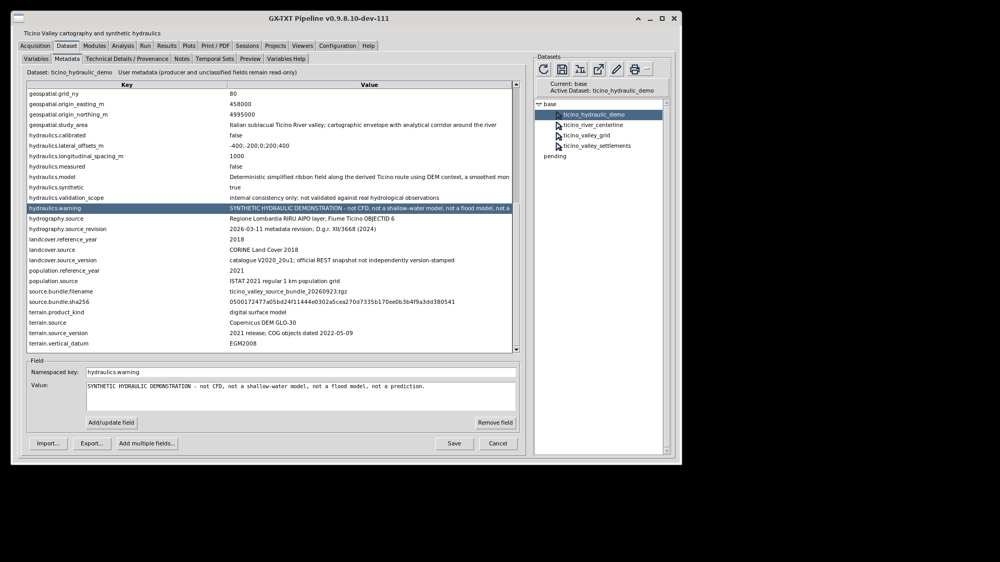
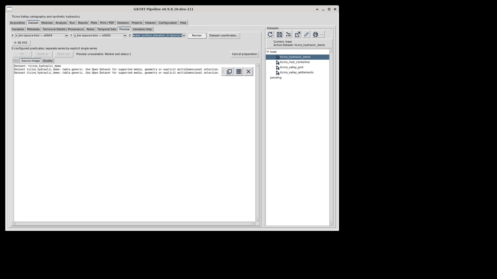
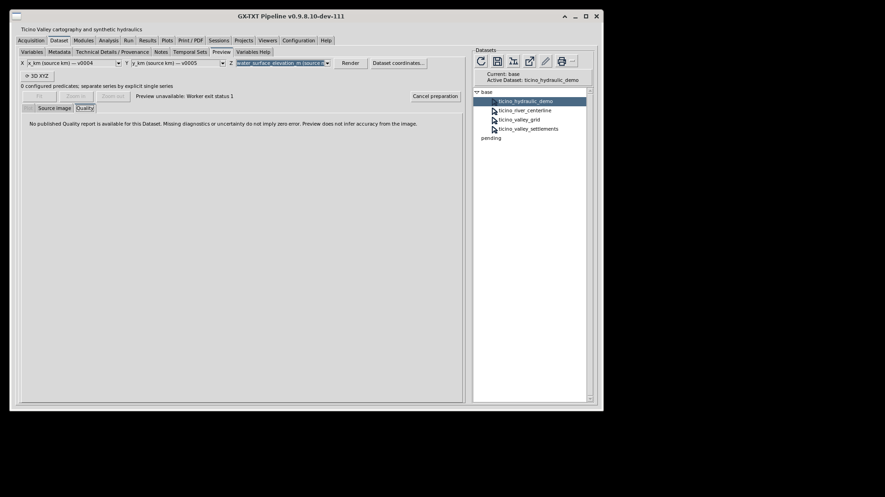

What happened in Ticino001
On 23 October 2026, one normal Generate selected the displayed Ticino Valley 3D Cartography 1.0.1 from GX-TXT Accepted Session Generators and created task210-ticino-001. The complete technical library ID/version was not read back. The four actual tables reported the following counts through the GUI; these are not independently parsed source values or a complete schema audit.
| Canonical name | Rows/samples | Variables |
|---|---|---|
ticino_valley_grid | 5440 | 21 |
ticino_river_centerline | 443 | 9 |
ticino_valley_settlements | 573 | 14 |
ticino_hydraulic_demo | 560 | 14 |
The 5,440-row count is consistent with the source/metadata-defined full 68×80 study grid. Unique cells, complete rectangular topology and 1 km spacing were not validated by a demo Run. Each matching metadata file was imported and reviewed through the normal editor, then Save clicked. Missing documented river-reference and hydraulic units were assigned through Variables; Technical Details readback after normal Save showed them. This does not establish conversion, calibration or cold-reopen persistence.
For the hydraulic Preview, actual X was x_km / v0004, Y y_km / v0005, both in km; Z was water_surface_elevation_m / v0012, in m. One Render reported Preview unavailable: Worker exit status 1. Its cause is unknown. We made no retry or native-3D attempt and did not run the four-source demo. All nine expected graph contexts and the full Plots matrix remain untested. Automatically started backend jobs were not inventoried; zero demo Run does not mean zero backend work.
We recorded the limitation in Notes, observed the normal Save configuration success message and closed with the application window’s normal close control. Private-path success dialogs remain in the retained operator evidence. No in-process or cold reopen was performed. Save acknowledgement is not a numerical, persistence or quality acceptance.
The unchanged frames below teach schema, units, provenance and the actual failure. None is a scientific map or hydraulic result. Click an image for its original resolution; the tutorial host’s image navigation itself remains untested. Exact image hashes and qualified observations are in the partial observation record.










Source-specific notices and modification statements remain in the attribution section. Generic measured/independent schema labels do not override explicit synthetic provenance. Missing Quality diagnostics are not zero error. No measured performance or original/candidate GUI parity is established.
Source baseline and prerequisites
This uses official deposited GX-TXT 0.9.8.10-dev-110 source, commit e2f19dcc4c32bbc8aa7410683ecb87febe9c2e68. Exact source pins and authoring inputs are retained in package provenance. The later Ticino001 observations below use frozen dev111 candidate13, commit e9aad5063f1223f4746760e6fc6e79f26392a412, which was neither installed nor activated. They do not certify a final release. Full numerical, Plots, timing, persistence and host coverage remain unfinished.
The source declares library org.giuxlab.gxtxt.accepted_generators 1.0.0, generator ticino_valley_3d 1.0.1 and module demo.geospatial.ticino_valley_3d 2.0.0. Resolve actual installed identities and dependencies before following literal controls. Source availability does not certify runtime compatibility or a final dev111 release.
Question and provenance
How can the same spatial reference support terrain, river, settlement, population and land-cover views while keeping a synthetic hydraulic demonstration clearly separate from observations?
The source package combines public cartographic derivatives with deliberately synthetic hydraulics. Its bundled provenance identifies Copernicus GLO-30 DSM, ISTAT 2021 population/localities, CORINE 2018 and a RIRU-derived Ticino route. These are historical source products, not current census totals or a live map. The elevation product is a digital surface model, not a bare-earth terrain model. The ordered river route is a derived candidate, not an authoritative channel choice through braided sections.
The hydraulic data are deterministic demonstration fields. They are not measured levels, discharge, CFD, a shallow-water solution, flood forecasts or a calibrated prediction. Internal numeric consistency does not validate real hydrology.
Retain the generated reference/SOURCES.md, ATTRIBUTIONS.md, normalization, classification and source-bundle evidence. Final screenshots/derivatives must carry their applicable source notices and modification statements. Do not replace those source-specific terms with a claim that all underlying data share the tutorial's author-content licence or imply organizational endorsement.
Optional local reading aids have not initialized. Full text, native disclosures and reading checkboxes remain available.
1. Select and generate the actual registered source
In the allocated real application, open Generate Session… normally, without a preparatory resize. Observe first usable selection and record timing separately from generation. Resolve the current matching catalog identity; deposited source declares ticino_valley_3d, version 1.0.1, display name Ticino Valley 3D Cartography, within org.giuxlab.gxtxt.accepted_generators library 1.0.0. These are source observations, not an installed-catalog receipt.
For a future authorized workflow, choose an unused owned Session name and generate through normal controls. Preserve task210-ticino-001 as the historical evidence Session; do not reuse it. The hybrid generator copies its own source template and then registers four canonical Datasets. Do not follow older prose by importing a second copy of the CSVs or an older Geospatial Examples package. Preserve actual generator provenance separately from older originating-library/version fields inside the portable data metadata; do not privately rewrite either.
Native host action — NOT_TESTED
The manifest pairs org.giuxlab.gxtxt.accepted_generators/ticino_valley_3d. If admitted in the common Guides Interactive Tutorial host, its native Open Generate Session… action is the source-supported route to that registered selection. Actual discovery, enabled/unavailable behavior and selection require real host evidence. This page supplies no Generate button, URI or backend callback. Opening this lesson never generates a Session, installs or enables a source.
2. Inspect four distinct canonical Datasets
Source assets are byte-identical to the earlier inventoried public generator inputs. The counts below reuse that source inventory; they are expectations, not new generation or GUI readback:
| Expected Dataset | Expected rows | Meaning and appropriate coordinates |
|---|---|---|
ticino_valley_grid | 5,440 | Complete 68×80 grid of 1 km cells; local X/Y and DSM elevation, allocated population and fractions |
ticino_river_centerline | 443 | Ordered route samples; chainage for a profile, local X/Y/reference elevation for a spatial line |
ticino_valley_settlements | 573 | Selected localities; local X/Y/ground elevation and separate population values |
ticino_hydraulic_demo | 560 | Synthetic ribbon samples; local X/Y, synthetic bed/water/depth and velocity |
All four source recipes declare table.generic. Record actual contracts, row counts, variables, stable IDs, types, dimensions, units, enabled state and source provenance through Dataset tools. The generic recipe chooses the first numeric column as a default coordinate: that can be grid_i, LOC_ID or easting, rather than the desired scientific axis. An identifier is not a continuous spatial or time coordinate. Explicitly choose meaningful actual Variables; never infer technical IDs from display headers or row positions.
Inspect the normal Dataset metadata and import the matching generated portable file if its fields are absent. Use the dataset-specific file, review and save through the ordinary GUI. The shared summary need not be imported four times. Keep the synthetic hydraulic warnings and cartographic source years visible.
The recipe supplies units for only some columns. For example, source declarations omit several river/hydraulic height/depth/velocity units despite their documented physical meanings. A blank unit is not proof of a dimensionless quantity. Record the actual schema first. If normal supported Variable tools allow a necessary documented unit/role assignment, make it explicitly in the new owned Session, using bundled source definitions and the actual unit catalog; retain before/after evidence. Otherwise report the exact affected gap through MAIN. Do not silently patch a generator/registry or call a unit-labelled plot scientifically verified while its actual source/unit contract is unresolved.
3. Keep the spatial reference consistent
The documented working CRS is EPSG:25832, ETRS89 / UTM zone 32N. Local kilometre offsets use the fixed origin E₀=458,000 m, N₀=4,995,000 m:
x_km = (easting_m − E₀) / 1000
y_km = (northing_m − N₀) / 1000Do not mix absolute UTM metres with local kilometre offsets in one overlay, or treat latitude/longitude degrees as Cartesian metric distances. The grid contains cell centres, not the envelope corners. Horizontal distance and vertical height must retain their actual units. A plot-box emphasis or camera change does not alter source elevations or turn vertical exaggeration into a measured slope.
Use the complete 5,440-row rectangular grid for the module's gridded surface. The documented corridor flag selects a different irregular subset (3,578 source cells); blindly removing cells before a rectangular-grid plot would break its precondition. The current demo runtime computes summaries over its full grid, not a corridor mask. Label actual report populations/fraction averages with their real scope, not as a corridor or administrative census total.
4. Inspect real Preview and run the four-source module
In Dataset Preview, explicitly select appropriate local X/Y and a compatible Z or colour quantity for each actual source. Observe real C++ Preview, source identity, units, selection/switching and actual available Fit/zoom/pan/rotation/resize controls. A static map image is not interactive Preview evidence.
In normal Configuration/Modules/Analysis controls, inspect the current Ticino Valley 3D Cartography Demo, deposited module ID demo.geospatial.ticino_valley_3d, version 2.0.0, with its actual dependencies. The generator configures these four Analysis Sources:
| Role | Expected source |
|---|---|
| primary | ticino_valley_grid |
| river | ticino_river_centerline |
| settlements | ticino_valley_settlements |
| hydraulic | ticino_hydraulic_demo |
Check actual source mappings and Run selection. The demo is initially selected for Run; plot.dataset is enabled with Run false and no automatic source binding. Use normal Run/Jobs and inspect its actual outcome. The module resolves stable Variable IDs from canonical names, validates a finite complete grid with unique cells and 1 km spacing, increasing chainage, allowed populations/fractions and synthetic water-surface = bed + depth consistency. These source-contract checks are not observed until the actual Run. No manually generated report or hidden analysis command can replace it.
Read the real report/metrics, which are expected under ticino_valley_report.txt and ticino_valley_metrics.ini, and record the actual Job, result paths and source identities. A synthetic identity tolerance or a successful plot never validates real flood safety or hydraulic accuracy.
5. Read all nine expected graph contexts correctly
The descriptors declare the following output suffixes beneath demo.geospatial.ticino_valley_3d.. Capture actual generated Graph/variant/provider identities and settings; do not populate them from this expected list.
| Suffix | Declared representation | Scientific quantity |
|---|---|---|
| terrain | Surface | Local X/Y; DSM elevation in metres |
| river | 3D line | Ordered route and reference elevation; not measured water level |
| settlements | 3D scatter | Ground elevation; population is a separate colour quantity |
| population | Surface | Terrain elevation; allocated population density is colour |
| landcover_built | Heatmap | Artificial-surface fraction, 0–1 |
| landcover_forest | Heatmap | Forest fraction, 0–1 |
| landcover_agriculture | Heatmap | Agriculture fraction, 0–1 |
| landcover_water | Heatmap | Open-water fraction, 0–1 |
| hydraulic | 3D scatter | Synthetic water-surface elevation; colour is synthetic depth |
Do not call a fraction heatmap terrain height or mistake hydraulic colour depth for its plotted water-surface elevation. Wetlands and unlisted land classes are not silently counted as water/forest. Area-weighted population allocations are not official municipal totals. Selected settlements are not every locality.
Compare actual Plots views, axes, colour bars and labels. Change a meaningful presentation setting through the actual controls and record the visible result and unchanged source context. Original demo descriptors do not claim legend support; eligible manual Plot contexts may differ. Source public Plot rendering does not by itself prove every original graph has an interactive 3D action.
6. Complete the actual Plots matrix using genuine source views
This tutorial requires its own full current Plots inventory/matrix. Exercise real selection, panels, graph/provider choices, variants, series, eligible legends, axes/units/ranges, colours, Fit/zoom/pan, rerender, persistence and supported export/Print flows. Record each actual control's applicability and evidence; do not inherit a thermal PASS or silently omit a failing eligible action.
Meaningful alternatives within these same sources include a real chainage versus reference-elevation profile for the river, correctly selected grid cross-sections, settlement scatter and separate synthetic hydraulic depth/velocity profiles with their retained grouping/point identities. Do not connect an unfiltered raster or multiple lateral ribbon offsets as one physical trajectory. Text/locality IDs, class codes and source years are not continuous scientific axes or a time series. No uncertainty, missing cells, volumetric geometry or extra observations are created merely to exercise a control.
Matrix preparation categories — no observed menu inventory
The categories below organize future evidence. They are not literal observed labels, a complete denominator or demonstrated eligibility. Actual labels, contexts and rows must come from this tutorial’s allocated GUI.
| Evidence category | Actual applicability | Outcome |
|---|---|---|
| Selection, panels and graph/provider contexts | Unknown | NOT_TESTED |
| Variants, series and legends | Unknown | NOT_TESTED |
| Axes, units, ranges, colours and labels | Unknown | NOT_TESTED |
| Fit, zoom, pan and supported 3D consultation | Unknown | NOT_TESTED |
| Presentation changes and rerender | Unknown | NOT_TESTED |
| Supported export, Print and persistence | Unknown | NOT_TESTED |
The coverage shell has no actual control rows. Disabled or unavailable states require observed context and a reason; they are not assumed. No coverage percentage is claimed.
7. Persist, interpret and deliver independently
Save and reopen through the normal Session controls. Verify retained four-source identity, metadata, schema/units, actual outputs, supported variants and source selection. Capture human-visible Generate, Dataset/Preview, Run/Jobs, Plots and navigation timings, preserving stalls/failures and genuine corrected retakes.
Save/close observed; reopening, timing and remaining capture evidence unfinished
Distinguish reopening within the current application from closing and launching the application afresh. Only an allocated, actually performed fresh launch can establish cold reopening. If a normal close action is unavailable, record the exact observed gap rather than substitute a hidden command or private Session edit.
State the actual timing method and its limits. Input-to-capture intervals can include dispatch, settling and tool overhead; they do not automatically measure first-frame latency. No timing, median, p95, performance improvement or original/candidate parity is established here.
Future captures must retain unchanged originals, source-specific attribution, scientific captions and a supported link to readable full resolution. Static rasters, native 3D consultation and Dataset Preview must be labelled separately. Retain failed attempts and corrected retakes without silently replacing the history.
The final English HTML ZIP will contain actual results/captures, this tutorial's full actual applicability-aware matrix, Preview/timing/persistence evidence, source-specific attribution and limitations, local assets, host manifest and checksums. The admitted common host's native generator-selection action uses the actual registered ID pair and leaves generation to the user. This partial draft contains the qualified Ticino001 observations above; it has no finished matrix, final scientific quality acceptance or new release ZIP.
Source-specific attribution and interpretation
These notices follow the deposited source’s reference/SOURCES.md and reference/ATTRIBUTIONS.md, whose exact hashes are pinned in provenance.json. No raw geospatial tables, computed maps, hydraulic-result images or derived numerical graph results are redistributed in this draft. Five unchanged interface screenshots document schema, unit entry, metadata and the Preview failure; the existing source-specific notices remain applicable. Before adding them, retain and check the bundled licence documents, source notices and modification statements. This summary does not replace them.
Copernicus DEM GLO-30 — DSM and required notices
The source uses the 2021 GLO-30 release: a digital surface model, source horizontal CRS EPSG:4326 and EGM2008 vertical datum. The acquired 30 m EPSG:25832 derivative uses nearest-neighbour horizontal reprojection; the normalized grid aggregates mean, minimum and maximum elevation. Do not relabel it as bare-earth DTM or silently replace its vertical reference.
Modified-product notice: “produced using Copernicus WorldDEM-30 © DLR e.V. 2010-2014 and © Airbus Defence and Space GmbH 2014-2018 provided under COPERNICUS by the European Union and ESA; all rights reserved”. This is a modified/clipped horizontal-reprojection derivative.
Original-source notice: “© DLR e.V. 2010-2014 and © Airbus Defence and Space GmbH 2014-2018 provided under COPERNICUS by the European Union and ESA; all rights reserved”. Liability notice: “The organisations in charge of the Copernicus programme by law or by delegation do not incur any liability for any use of the Copernicus WorldDEM-30”. No endorsement is implied. Retain the bundled cop_dem_license.pdf and its redistribution obligations, including Article 6.
ISTAT 2021, CORINE 2018 and Regione Lombardia / RIRU
ISTAT population grid and localities: CC BY 4.0. Attribute ISTAT, source products and 2021 reference year, link the licence and state selection/reprojection modifications. Population is area-weighted from the EPSG:3035 source grid onto the normalized EPSG:25832 1 km grid. Localities retain inhabited centres/nuclei (TIPO_LOC 1/2), source POP21 ≥ 50 and route distance ≤ 20 km; population values are not inferred.
CORINE Land Cover 2018: catalogue V2020_20u1; the queried official REST snapshot does not independently expose a package version stamp. Attribution: “European Union’s Copernicus Land Monitoring Service information; DOI:10.2909/71c95a07-e296-44fc-b22b-415f42acfdf0”. Retain CLMS data-policy attribution, area-clip/reprojection notice and no implied EU endorsement. Fractions are target-cell polygon-area fractions: artificial classes, forest 311/312/313, documented agricultural classes and water 511/512. Wetlands and other classes are not reassigned.
Regione Lombardia / RIRU: CC BY 4.0; attribute the Reticolo Idrografico Regionale Unificato, official AIPO main-watercourse layer, Fiume Ticino OBJECTID 6, and state transformation/route derivation. The north-to-south shortest path through unsimplified vertices is an ordered chainage candidate, not an authoritative braided-channel choice.
The generated reference/ATTRIBUTIONS.md carries original source-policy and CC BY 4.0 licence links. They are source references, not fetched or validated here. Acquisition, normalization and classification receipts must remain with the real generated Session.
Project-authored tutorial prose, layout and local script are GPL-3.0-or-later; see the LICENSE file included in this package for local inspection. That grant does not relicense underlying cartographic products or imply endorsement. Synthetic hydraulic fields remain demonstration data, regardless of realistic geographic context.
Actual partial evidence and unfinished work
The workflow observations distinguish partial generation/schema/metadata/unit/save evidence from the failed hydraulic Preview. Ticino001 retains exact public frame hashes and limits. No actual graph, Job identity, report number, performance metric or complete coverage denominator has been invented.
Remaining work: owner disposition of the Preview failure; successful eligible Preview and native controls; actual four-source bindings and demo Run; all nine graph contexts; independent numerical interpretation; this tutorial’s full applicability-aware Plots matrix; in-process and cold persistence; measured timings; and common-host HTML/CSS/JS/navigation/native generator action. None is accepted by the existing save/close or static source record.
Scientific/content/visual quality remains owned by GX210-TUTORIAL1; MAIN controls integration, allocation and release. This is a partial source candidate, not a final ZIP, installed tutorial or final scientific acceptance. Reading marks never alter evidence. Source manifest/checksums are byte records, not GUI tests.